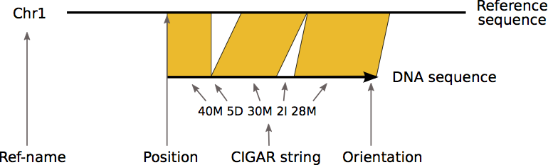
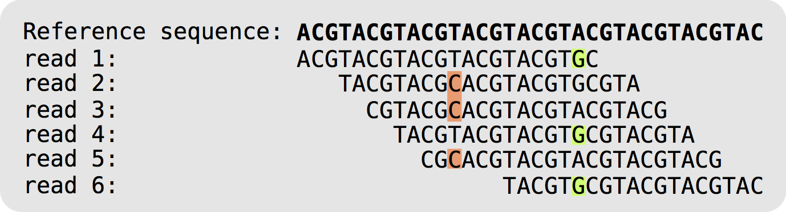
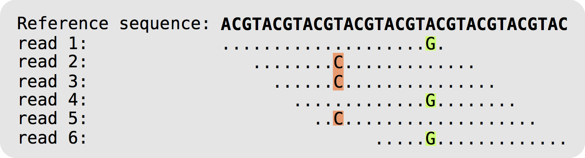
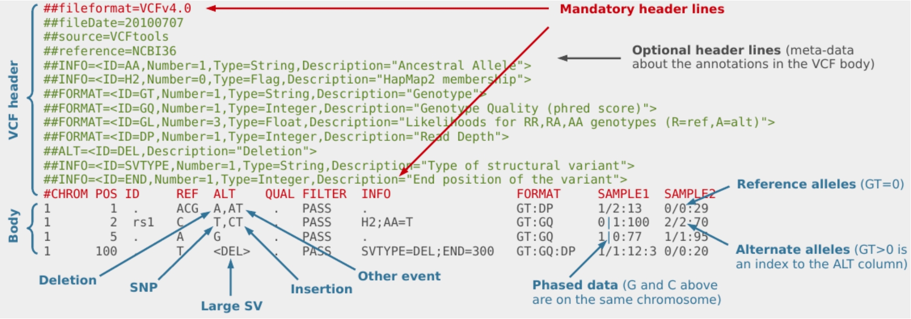
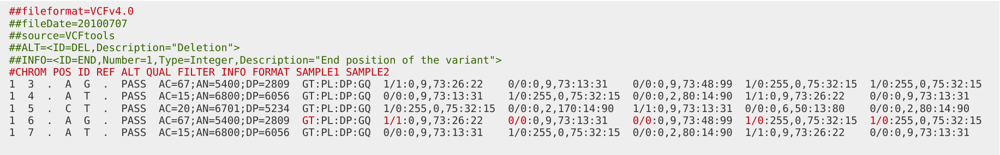
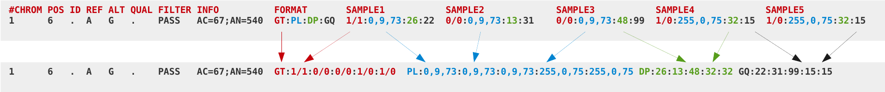
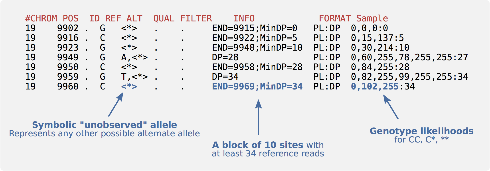

pwdData formats for NGS data
Here we will take a closer look at some of the most common NGS data formats. First, check you are in the correct directory.
It should display something like:
/home/manager/course_data/data_formats/
FASTA
The FASTA format is used to store both nucleotide data and protein sequences. Each sequence in a FASTA file is represented by two parts, a header line and the actual sequence. The header always starts with the symbol “>” and is followed by information about the sequence, such as a unique identifier. The following lines show two sequences represented in FASTA format:
>Sequence_1
CTTGACGACTTGAAAAATGACGAAATCACTAAAAAACGTGAAAAATGAGAAATG
AAAATGACGAAATCACTAAAAAACGTGACGACTTGAAAAATGACCAC
>Sequence_2
CTTGAGACGAAATCACTAAAAAACGTGACGACTTGAAGTGAAAAATGAGAAATG
AAATCATGACGACTTGAAGTGAAAAAGTGAAAAATGAGAAATGAACGTGACGAC
AAAATGACGAAATCATGACGACTTGAAGTGAAAAATAAATGACCExercises
Q1: How many sequences are there in the fasta file data/example.fasta? (Hint: is there a grep option you can use?)
FASTQ
FASTQ is a data format for sequencing reads. It is an extension to the FASTA file format, and includes a quality score for each base. Have a look at the example below, containing two reads:
@ERR007731.739 IL16_2979:6:1:9:1684/1
CTTGACGACTTGAAAAATGACGAAATCACTAAAAAACGTGAAAAATGAGAAATG
+
BBCBCBBBBBBBABBABBBBBBBABBBBBBBBBBBBBBABAAAABBBBB=@>B
@ERR007731.740 IL16_2979:6:1:9:1419/1
AAAAAAAAAGATGTCATCAGCACATCAGAAAAGAAGGCAACTTTAAAACTTTTC
+
BBABBBABABAABABABBABBBAAA>@B@BBAA@4AAA>.>BAA@779:AAA@AWe can see that for each read we get four lines:
- The read metadata, such as the read ID. Starts with
@and, for paired-end Illumina reads, is terminated with /1 or /2 to show that the read is the member of a pair. - The read
- Starts with
+and optionally contains the ID again - The per base Phred quality score
The quality scores range (in theory) from 1 to 94 and are encoded as ASCII characters. The first 32 ASCII codes are reserved for control characters which are not printable, and the 33rd is reserved for space. Neither of these can be used in the quality string, so we need to subtract 33 from whatever the value of the quality character is. For example, the ASCII code of “A” is 65, so the corresponding quality is:
Q = 65 - 33 = 32The Phred quality score Q relates to the base-calling error probability P as
P = 10-Q/10
The Phred quality score is a measure of the quality of base calls. For example, a base assigned with a Phred quality score of 30 tells us that there is a 1 in 1000 chance that this base was called incorrectly.
| Phred Quality Score | Probability of incorrect base call | Base call accuracy |
|---|---|---|
| 10 | 1 in 10 | 90% |
| 20 | 1 in 100 | 99% |
| 30 | 1 in 1000 | 99.9% |
| 40 | 1 in 10,000 | 99.99% |
| 50 | 1 in 100,000 | 99.999% |
| 60 | 1 in 1,000,000 | 99.9999% |
Exercises
Q2: How many reads are there in the file example.fastq? (Hint: remember that @ is a possible quality score. Is there something else in the header that is unique?)
SAM
SAM (Sequence Alignment/Map) format is a unified format for storing read alignments to a reference genome. It is a standard format for storing NGS sequencing reads, base qualities, associated meta-data and alignments of the data to a reference genome. If no reference genome is available, the data can also be stored unaligned.
The files consist of a header section (optional) and an alignment section. The alignment section contains one record (a single DNA fragment alignment) per line describing the alignment between fragment and reference. Each record has 11 fixed columns and optional key:type:value tuples. Open the SAM/BAM file specification document https://samtools.github.io/hts-specs/SAMv1.pdf either in a web browser or you can find a copy in the QC directory as you may need to refer to it throughout this tutorial.
Now let us have a closer look at the different parts of the SAM/BAM format.
Header Section
The header section of a SAM file looks like:
@HD VN:1.0 SO:coordinate
@SQ SN:test_ref LN:17637
@RG ID:ERR003612 PL:ILLUMINA LB:g1k-sc-NA20538-TOS-1 PI:2000 DS:SRP000540 SM:NA20538 CN:SCEach line in the SAM header begins with an @, followed by a two-letter header record type code as defined in the SAM/BAM format specification document. Each record type can contain meta-data captured as a series of key-value pairs in the format of ‘TAG:VALUE’.
Read groups
One useful record type is RG which can be used to describe each lane of sequencing. The RG code can be used to capture extra meta-data for the sequencing lane. Some common RG TAGs are:
- ID: SRR/ERR number
- PL: Sequencing platform
- PU: Run name
- LB: Library name
- PI: Insert fragment size
- SM: Individual/Sample
- CN: Sequencing centre
While most of these are self explanitory, insert fragment size may occasionally be negative. This simply indicates that the reads found are overlapping while its size is less than 2 x read length.
Exercises
Look at the following line from the header of a SAM file and answering the questions that follow:
@RG ID:ERR003612 PL:ILLUMINA LB:g1k-sc-NA20538-TOS-1 PI:2000 DS:SRP000540 SM:NA20538 CN:SCQ3: What does RG stand for?
Q4: What is the sequencing platform?
Q5: What is the sequencing centre?
Q6: What is the lane identifier?
Q7: What is the expected fragment insert size?
Alignment Section
The alignment section of SAM files contains one line per read alignment, an example is
ERR005816.1408831 163 Chr1 19999970 23 40M5D30M2I28M = 20000147 213 GGTGGGTGGATCACCTGAGATCGGGAGTTTGAGACTAGGTGG... <=@A@??@=@A@A>@BAA@ABA:>@<>=BBB9@@2B3<=@A@...
Each of the lines are composed of multiple columns listed below. The first 11 columns are mandatory.
- QNAME: Query NAME of the read or the read pair i.e. DNA sequence
- FLAG: Bitwise FLAG (pairing, strand, mate strand, etc.)
- RNAME: Reference sequence NAME
- POS: 1-Based leftmost POSition of clipped alignment
- MAPQ: MAPping Quality (Phred-scaled)
- CIGAR: Extended CIGAR string (operations: MIDNSHPX=)
- MRNM: Mate Reference NaMe (’=’ if same as RNAME)
- MPOS: 1-Based leftmost Mate POSition
- ISIZE: Inferred Insert SIZE
- SEQ: Query SEQuence on the same strand as the reference
- QUAL: Query QUALity (ASCII-33=Phred base quality)
- OTHER: Optional fields
The image below provides a visual guide to some of the columns of the SAM format.

Exercises
Let’s have a look at example.sam. Notice that we can use the standard UNIX operations like cat on this file.
cat data/example.samQ8: What is the mapping quality of ERR003762.5016205? (Hint: can you use grep and awk to find this?)
Q9: What is the CIGAR string for ERR003814.6979522? (Hint: we will go through the meaning of CIGAR strings in the next section)
Q10: What is the inferred insert size of ERR003814.1408899?
CIGAR string
Column 6 of the alignment is the CIGAR string for that alignment. The CIGAR string provides a compact representation of sequence alignment. Have a look at the table below. It contains the meaning of all different symbols of a CIGAR string:
| Symbol | Meaning |
|---|---|
| M | alignment match or mismatch |
| = | sequence match |
| X | sequence mismatch |
| I | insertion into the read (sample sequenced) |
| D | deletion from the read (sample sequenced) |
| S | soft clipping (clipped sequences present in SEQ) |
| H | hard clipping (clipped sequences NOT present in SEQ) |
| N | skipped region from the reference |
| P | padding (silent deletion from padded reference) |
Below are two examples describing the CIGAR string in more detail.
Example 1:
Ref: ACGTACGTACGTACGT
Read: ACGT- - - - ACGTACGA
Cigar: 4M 4D 8M
The first four bases in the read are the same as in the reference, so we can represent these as 4M in the CIGAR string. Next comes 4 deletions, represented by 4D, followed by 7 alignment matches and one alignment mismatch, represented by 8M. Note that the mismatch at position 16 is included in 8M. This is because it still aligns to the reference.
Example 2:
Ref: ACTCAGTG- - GT
Read: ACGCA- TGCAGTtagacgt
Cigar: 5M 1D 2M 2I 2M 7S
Here we start off with 5 alignment matches and mismatches, followed by one deletion. Then we have two more alignment matches, two insertions and two more matches. At the end, we have seven soft clippings, 7S. These are clipped sequences that are present in the SEQ (Query SEQuence on the same strand as the reference).
Exercises
Q11: What does the CIGAR from Q9 mean?
Q12: How would you represent the following alignment with a CIGAR string?
Ref: ACGT- - - - ACGTACGT
Read: ACGTACGTACGTACGT
Flags
Column 2 of the alignment contains a combination of bitwise FLAGs describing the alignment. The following table contains the information you can get from the bitwise FLAGs:
| Hex | Dec | Flag | Description |
|---|---|---|---|
| 0x1 | 1 | PAIRED | paired-end (or multiple-segment) sequencing technology |
| 0x2 | 2 | PROPER_PAIR | each segment properly aligned according to the aligner |
| 0x4 | 4 | UNMAP | segment unmapped |
| 0x8 | 8 | MUNMAP | next segment in the template unmapped |
| 0x10 | 16 | REVERSE | SEQ is reverse complemented |
| 0x20 | 32 | MREVERSE | SEQ of the next segment in the template is reversed |
| 0x40 | 64 | READ1 | the first segment in the template |
| 0x80 | 128 | READ2 | the last segment in the template |
| 0x100 | 256 | SECONDARY | secondary alignment |
| 0x200 | 512 | QCFAIL | not passing quality controls |
| 0x400 | 1024 | DUP | PCR or optical duplicate |
| 0x800 | 2048 | SUPPLEMENTARY | supplementary alignment |
For example, if you have an alignment with FLAG set to 113, this can only be represented by decimal codes 64 + 32 + 16 + 1, so we know that these four flags apply to the alignment and the alignment is paired-end, reverse complemented, sequence of the next template/mate of the read is reversed and the read aligned is the first segment in the template.
Primary, secondary and supplementary alignments
A read that aligns to a single reference sequence (including insertions, deletions, skips and clipping but not direction changes), is a linear alignment. If a read cannot be represented as a linear alignment, but instead is represented as a group of linear alignments without large overlaps, it is called a chimeric alignment. These can for instance be caused by structural variations. Usually, one of the linear alignments in a chimeric alignment is considered to be the representative alignment, and the others are called supplementary.
Sometimes a read maps equally well to more than one spot. In these cases, one of the possible alignments is marked as the primary alignment and the rest are marked as secondary alignments.
BAM
BAM (Binary Alignment/Map) format, is a compressed binary version of SAM. This means that, while SAM is human readable, BAM is only readable for computers. BAM files can be viewed using samtools, and will then have the same format as a SAM file. The key features of BAM are:
- Can store alignments from most mappers
- Supports multiple sequencing technologies
- Supports indexing for quick retrieval/viewing
- Compact size (e.g. 112Gbp Illumina = 116GB disk space)
- Reads can be grouped into logical groups e.g. lanes, libraries, samples
- Widely supported by variant calling packages and viewers
Since BAM is a binary format, we can’t use the standard UNIX operations directly on this file format. Samtools is a set of programs for interacting with SAM and BAM files. Using the samtools view command, print the header of the BAM file:
samtools view -H data/NA20538.bamExercises
Q13: What version of the human assembly was used to perform the alignments? (Hint: Can you spot this somewhere in the @SQ records?)
Q14: How many lanes are in this BAM file? (Hint: Do you recall what RG represents?)
Q15: What programs were used to create this BAM file? (Hint: have a look for the program record, @PG)
Q16: What version of bwa was used to align the reads? (Hint: is there anything in the @PG record that looks like it could be a version tag?)
The output from running samtools view on a BAM file without any options is a headerless SAM file. This gets printed to STDOUT in the terminal, so we will want to pipe it to something. Let’s have a look at the first read of the BAM file:
samtools view data/NA20538.bam | head -n 1Q17: What is the name of the first read? (Hint: have a look at the alignment section if you can’t recall the different fields)
Q18: What position does the alignment of the read start at?
CRAM
Even though BAM files are compressed, they are still very large. Typically they use 1.5-2 bytes for each base pair of sequencing data that they contain, and while disk capacity is ever improving, increases in disk capacity are being far outstripped by sequencing technologies.
BAM stores all of the data, this includes every read base, every base quality, and it uses a single conventional compression technique for all types of data. CRAM was designed for better compression of genomic data than SAM/BAM. CRAM uses three important concepts:
- Reference based compression
- Controlled loss of quality information
- Different compression methods to suit the type of data, e.g. base qualities vs. metadata vs. extra tags
The figure below displays how reference-based compression works. Instead of saving all the bases of all the reads, only the nucleotides that differ from the reference, and their positions, are kept.


In lossless (no information is lost) mode a CRAM file is 60% of the size of a BAM file, so archives and sequencing centres have moved from BAM to CRAM.
Since samtools 1.3, CRAM files can be read in the same way that BAM files can. We will look closer at how you can convert between SAM, BAM and CRAM formats in the next section.
Indexing
To allow for fast random access of regions in BAM and CRAM files, they can be indexed. The files must first be coordinate-sorted rather that sorted by read name. This can be done using samtools sort. If no options are supplied, it will by default sort by the left-most position of the reference.
samtools sort -o data/NA20538_sorted.bam data/NA20538.bamNow we can use samtools index to create an index file (.bai) for our sorted BAM file:
samtools index data/NA20538_sorted.bamTo look for reads mapped to a specific region, we can use samtools view and specify the region we are interested in as: RNAME[:STARTPOS[-ENDPOS]]. For example, to look at all the reads mapped to a region called chr4, we could use:
samtools view alignment.bam chr4
To look at the region on chr4 beginning at position 1,000,000 and ending at the end of the chromosome, we can do:
samtools view alignment.bam chr4:1000000
And to explore the 1001bp long region on chr4 beginning at position 1,000 and ending at position 2,000, we can use:
samtools view alignment.bam chr4:1000-2000
Exercises
Q19: How many reads are mapped to region 20025000-20030000 on chromosome 1?
VCF
The VCF file format was introduced to store variation data. VCF consists of tab-delimited text and is parsable by standard UNIX commands which makes it flexible and user-extensible. The figure below provides an overview of the different components of a VCF file:

VCF header
The VCF header consists of meta-information lines (starting with ##) and a header line (starting with #). All meta-information lines are optional and can be put in any order, except for fileformat. This holds the information about which version of VCF is used and must come first.
The meta-information lines consist of key=value pairs. Examples of meta-information lines that can be included are ##INFO, ##FORMAT and ##reference. The values can consist of multiple fields enclosed by <>. More information about these fields is available in the VCF specification http://samtools.github.io/hts-specs/VCFv4.3.pdf. This can be accessed using a web browser and there is a copy in the QC directory.
Header line
The header line starts with # and consists of 8 required fields:
- CHROM: an identifier from the reference genome
- POS: the reference position
- ID: a list of unique identifiers (where available)
- REF: the reference base(s)
- ALT: the alternate base(s)
- QUAL: a phred-scaled quality score
- FILTER: filter status
- INFO: additional information
If the file contains genotype data, the required fields are also followed by a FORMAT column header, and then a number of sample IDs. The FORMAT field specifies the data types and order. Some examples of these data types are:
- GT: Genotype, encoded as allele values separated by either / or |
- DP: Read depth at this position for this sample
- GQ: Conditional genotype quality, encoded as a phred quality
Body
In the body of the VCF, each row contains information about a position in the genome along with genotype information on samples for each position, all according to the fields in the header line.
BCF
BCF is a compressed binary representation of VCF.
VCF can be compressed with BGZF (bgzip) and indexed with TBI or CSI (tabix), but even compressed it can still be very big. For example, a compressed VCF with 3781 samples of human data will be 54 GB for chromosome 1, and 680 GB for the whole genome. VCFs can also be slow to parse, as text conversion is slow. The main bottleneck is the “FORMAT” fields. For this reason the BCF format was developed.
In BCF files the fields are rearranged for fast access. The following images show the process of converting a VCF file into a BCF file.


Bcftools comprises a set of programs for interacting with VCF and BCF files. It can be used to convert between VCF and BCF and to view or extract records from a region.
bcftools view
Let’s have a look at the header of the file 1kg.bcf in the data directory. Note that bcftools uses -h to print only the header, while samtools uses -H for this.
bcftools view -h data/1kg.bcfSimilarly to BAM, BCF supports random access, that is, fast retrieval from a given region. For this, the file must be indexed:
bcftools index data/1kg.bcfNow we can extract all records from the region 20:24042765-24043073, using the -r option. The -H option will make sure we don’t include the header in the output:
bcftools view -H -r 20:24042765-24043073 data/1kg.bcfbcftools query
The versatile bcftools query command can be used to extract any VCF field. Combined with standard UNIX commands, this gives a powerful tool for quick querying of VCFs. Have a look at the usage options:
bcftools query -hLet’s try out some useful options. As you can see from the usage, -l will print a list of all the samples in the file. Give this a go:
bcftools query -l data/1kg.bcfAnother very useful option is -s which allows you to extract all the data relating to a particular sample. This is a common option meaning it can be used for many bcftools commands, like bcftools view. Try this for sample HG00131:
bcftools view -s HG00131 data/1kg.bcf | head -n 50The format option, -f can be used to select what gets printed from your query command. For example, the following will print the position, reference base and alternate base for sample HG00131, separated by tabs:
bcftools query -f'%POS\t%REF\t%ALT\n' -s HG00131 data/1kg.bcf | headFinally, let’s look at the -i option. With this option we can select only sites for which a particular expression is true. For instance, if we only want to look at sites that have at least 2 alternate alleles across all samples, we can use the following expression (piped to head to only show a subset of the output):
bcftools query -f'%CHROM\t%POS\n' -i 'AC[0]>2' data/1kg.bcf | headWe use -i with the expression AC[0]>2. AC is an info field that holds the __a__llele __c__ount. Some fields can hold multiple values, so we use AC[0]>2 to indicate that we are looking for the first value (this is zero indexed, and hence starts at 0 instead of 1), and that this value should be > 2. To format our output, we use -f to specify that we want to print the chromosome name and position.
There is more information about expressions on the bcftools manual page http://samtools.github.io/bcftools/bcftools.html#expressions
Exercises
Now, try and answer the following questions about the file 1kg.bcf in the data directory. For more information about the different usage options you can open the bcftools query manual page http://samtools.github.io/bcftools/bcftools.html#query in a web browser.
Q20: What version of the human assembly do the coordinates refer to?
Q21: How many samples are there in the BCF?
Q22: What is the genotype of the sample HG00107 at the position 20:24019472? (Hint: use the combination of -r, -s, and -f options)
Q23: How many positions are there with more than 10 alternate alleles? (Hint: use the -i filtering option)
Q24: In how many positions does HG00107 have a non-reference genotype and a read depth bigger than 10? (Hint: you can use pipes to combine bcftools queries)
gVCF
Often it is not enough to know variant sites only. For instance, we don’t know if a site was dropped because it matches the reference or because the data is missing. We sometimes need evidence for both variant and non-variant positions in the genome. In gVCF format, blocks of reference-only sites can be represented in a single record using the “INFO/END” tag. Symbolic alleles (<*>) are used for incremental calling:

Exercises
Q25: In the above example, what is the size of the reference-only block starting at position 9923?
Q26: For the same block, what is the first base?
Q27: How many reference reads does the block have?
Now continue to the next section of the tutorial: QC assessment of NGS data.